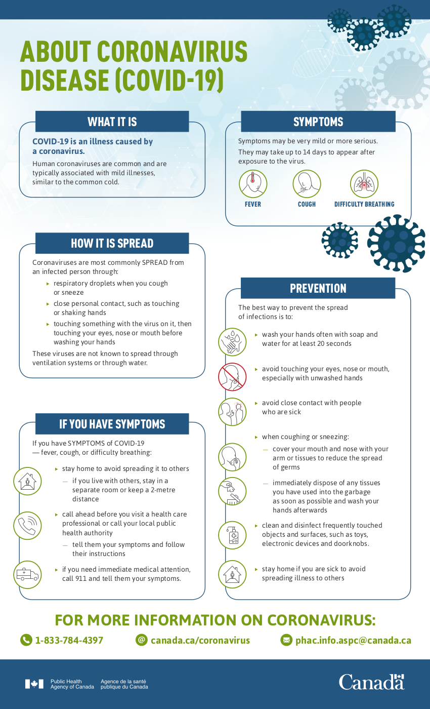
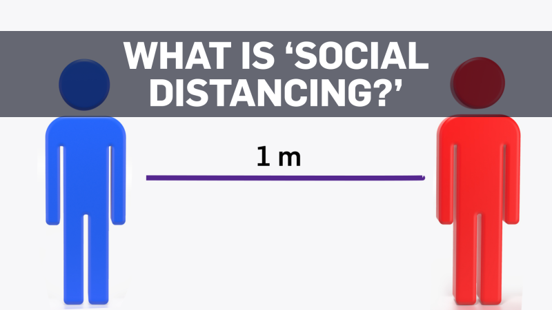

I guess it is time to define what a Quarantine is. Dictionary.com states the definition of a quarantine as a state, period, or place of isolation in which people or animals that have arrived from elsewhere or been exposed to infectious or contagious disease are placed. All of us are pulling our weight to make sure we are keeping our distance to help contain the Covid-19 pandemic. We have seen great strides made by China, South Korea and Italy to lockdown their countries have helped flatten the infection curve. The Government of Canada has published the info sheet on Covid-19.
Knowing that the best way to help the pandemic infection curve is to wash your hands, try not to touch your face, limit how many times you leave your house, stay home if you are not feeling well and practice Social Distancing which you find the health Canada definition here. Keeping your distance from people is best by staying in your own residence. For some people this may make them feel very isolated from their lives and outside world.
The Insider had a
great article about Social Isolation and how it could affect your Physical and Mental state.
The article references Zlatin Ivanov MD. who states All our systems, including social,
psychological and biological, have developed around social groups and interaction with one another,
Ivanov says. Social isolation in most cases would bring the negative effect of loneliness, anxiety,
and sometimes depression.
These negative effects can have a negative impact on not only your
mental health but your physical health as well. In the next few pages we will show you some helpful
tips to keep your spirits up and in good health while we are seperated from each other.